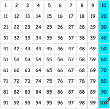
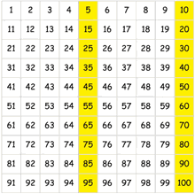
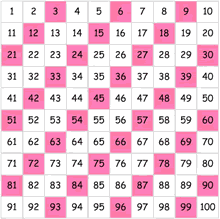
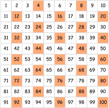

Skip Counting
"Skip Counting" is counting by a number that is not 1
Example: We Skip Count by 2 like this:
2, 4, 6, 8, 10, 12, 14, 16, 18, 20, ...
|
Learning to "Skip Count" helps you:
|

Skip Counting by 10s
Skip Counting by 10s is the easiest.
It is like normal counting (1, 2, 3,...) except there is an extra "0":
10, 20, 30, 40, 50, 60, 70, 80, 90, 100, ...
- Practice: Skip Counting by 10s to 100
- Practice: Skip Counting by 10s to 300
Skip Count by 2
Learning to skip count by 2 means you can count things faster!
Try this example, who will be the winner?
Try It Yourself
Drag the marbles:
Now Get Some Practice!
Now you can practice by "Filling Out the Missing Numbers":
- First try: Skip Counting by 2s to 20
- And then: Skip Counting by 2s to 100

Skip Counting by 5s
Skip Counting by 5s has a nice pattern:
5, 10, 15, 20, 25, 30, 35, 40, 45, 50, ...
That pattern should make it easy for you!
OK, let us get some practice:
- Start with: Skip Counting by 5s to 50
- And then try: Skip Counting by 5s to 100

Skip Counting by 3s and 4s
Skip Counting by 3s is:
3, 6, 9, 12, 15, 18, 21, 24, 27, 30, ...
- Practice: Skip Counting by 3s to 36
- And: Skip Counting by 3s to 90

Skip Counting by 4s is:
4, 8, 12, 16, 20, 24, 28, 32, 36, 40, ...
- Practice: Skip Counting by 4s to 48
- And: Skip Counting by 4s to 120
Skip Count Backwards!
Yes, skip counting also works backwards:
| −1 | Skip Counting Backwards (20 to 1) and (100 to 1) | |
| −2 | Skip Counting Backwards by 2 | |
| −5 | Skip Counting Backwards by 5 |
|
| −10 | Skip Counting Backwards by 10 |
Skip Count by Bigger Numbers!
Try these for a challenge:
| 25 | Skip Counting by 25s | |
| 50 | Skip Counting by 50s | |
| 100 | Skip Counting by 100s |
Skip Count on the Number Line
Also try skip counting on the number line